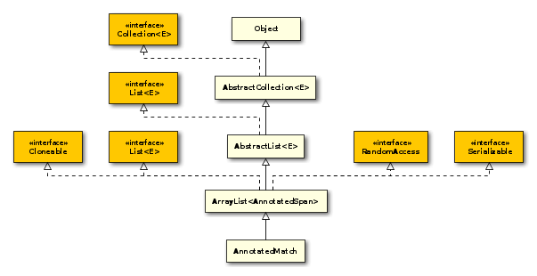
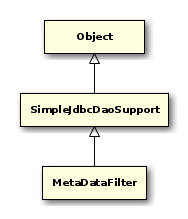
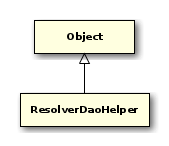
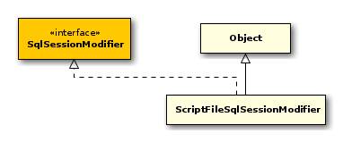
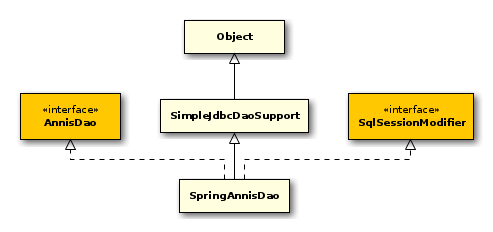

public interface AnnisDao { // Public Methods public SaltProject annotate(QueryData queryData);
public int count(QueryData queryData);
public T executeQueryFunction(QueryData queryData, SqlGenerator<QueryData, T> generator);
public T executeQueryFunction(QueryData queryData, SqlGenerator<QueryData, T> generator, <any> extractor);
public String explain(SqlGenerator<QueryData, ?> generator, QueryData queryData, boolean analyze);
public List<Match> find(QueryData queryData);
public AnnisBinary getBinary(String corpusName, int offset, int length);
public HashMap<Long, Properties> getCorpusConfiguration();
public Map<String, String> getCorpusConfiguration(String corpusName);
public List<ResolverEntry> getResolverEntries(SingleResolverRequest request);
public int getTimeout();
public List<AnnisAttribute> listAnnotations(List<Long> corpusList, boolean listValues, boolean onlyMostFrequentValues);
public List<AnnisCorpus> listCorpora();
public List<Annotation> listCorpusAnnotations(String toplevelCorpusName, String documentName);
public List<Annotation> listCorpusAnnotations(long id);
public List<Long> listCorpusByName(List<String> corpusNames);
public List<String> mapCorpusIdsToNames(List<Long> ids);
public List<AnnotatedMatch> matrix(QueryData queryData);
public QueryData parseAQL(String aql, List<Long> corpusList);
public SaltProject retrieveAnnotationGraph(String toplevelCorpusName, String documentName);
public SaltProject retrieveAnnotationGraph(long textId);
public void setCorpusConfiguration(HashMap<Long, Properties> corpusConfiguration);
public void setTimeout(int milliseconds);
}
public class AnnotatedMatch extends ArrayList<AnnotatedSpan> { // Public Constructors public AnnotatedMatch();
public AnnotatedMatch(AnnotatedSpan[] spans);
public AnnotatedMatch(List<AnnotatedSpan> spans);
}

public class AnnotatedSpan { // Public Constructors public AnnotatedSpan(long id, String coveredText, List<Annotation> annotations);
public AnnotatedSpan(long id, String coveredText, List<Annotation> annotations, List<Annotation> metadata);
// Public Methods public List<Annotation> getAnnotations();
public String getCoveredText();
public long getId();
public List<Annotation> getMetadata();
public void setAnnotations(List<Annotation> annotations);
public void setCoveredText(String coveredText);
public void setId(long id);
public void setMetadata(List<Annotation> metadata);
}

public interface CorpusSelectionStrategy { // Public Methods public void addMetaAnnotations(List<Annotation> annotations);
public String createViewSql();
public void registerNodeAdapter(NodeSqlAdapter adapter);
public boolean usesViews();
public String viewName(String table);
public String whereClauseForNode(String docRefColumn);
}

public class CountExtractor { // Public Constructors public CountExtractor();
// Public Methods public String explain(JdbcTemplate jdbcTemplate, boolean analyze);
public String getMatchedNodesViewName();
public int queryCount(JdbcTemplate jdbcTemplate);
public void setMatchedNodesViewName(String matchedNodesViewName);
}

public class DocumentNameMapRow { // Public Constructors public DocumentNameMapRow();
// Public Methods public String mapRow(ResultSet rs, int rowNum) throws SQLException;
}

public class ListCorpusByNameDaoHelper extends <any> { // Public Constructors public ListCorpusByNameDaoHelper();
// Public Methods public String createSql(List<String> corpusNames);
}

public class Match { // Public Constructors public Match();
// Public Methods public String getSaltId(int i);
public void setSaltId(String id);
}

public class MetaDataFilter extends SimpleJdbcDaoSupport { // Public Constructors public MetaDataFilter();
// Public Methods public List<Long> getDocumentsForMetadata(QueryData queryData);
public SubQueryCorpusSelectionStrategy getSubQueryCorpusSelectionStrategy();
public void setSubQueryCorpusSelectionStrategy(SubQueryCorpusSelectionStrategy subQueryCorpusSelectionStrategy);
}
- Autor
-
thomas

public List<Long> getDocumentsForMetadata(QueryData queryData);
Will query the database which documents are matching according to the given metadata
|
Parameter |
|
|
queryData |
QueryData from which the meta data will be extracted |
|
return |
The list of documents matching the meta data or null if no constraints need to be applied (all documents are matching) |
public class ResolverDaoHelper { // Public Constructors public ResolverDaoHelper();
// Public Methods public PreparedStatement createPreparedStatement(Connection cnctn) throws SQLException;
public List<ResolverEntry> extractData(ResultSet rs) throws SQLException, DataAccessException;
public void fillPreparedStatement(SingleResolverRequest resolverRequest, PreparedStatement stmt) throws SQLException;
}
- Autor
-
thomas

@Deprecated public interface ResultSetConverter<T> { // Public Methods public T convertResultSet(ResultSet resultSet);
}

public class ScriptFileSqlSessionModifier implements SqlSessionModifier { // Public Constructors public ScriptFileSqlSessionModifier();
// Public Methods public AdministrationDao getAdministrationDao();
public String getScriptFile();
public void modifySqlSession(JdbcTemplate jdbcTemplate, QueryData queryData);
public void setAdministrationDao(AdministrationDao administrationDao);
public void setScriptFile(String scriptFile);
}

public class SpringAnnisDao extends SimpleJdbcDaoSupport implements AnnisDao, SqlSessionModifier { // Public Constructors public SpringAnnisDao();
// Public Methods public SaltProject annotate(QueryData queryData);
public int count(QueryData queryData);
public T executeQueryFunction(QueryData queryData, SqlGenerator<QueryData, T> generator);
public T executeQueryFunction(QueryData queryData, SqlGenerator<QueryData, T> generator, <any> extractor);
public String explain(SqlGenerator<QueryData, ?> generator, QueryData queryData, boolean analyze);
public List<Match> find(QueryData queryData);
public AnnotateSqlGenerator<SaltProject> getAnnotateSqlGenerator();
public AnnisParser getAqlParser();
public AnnisBinary getBinary(String corpusName, int offset, int length);
public ByteHelper getByteHelper();
public HashMap<Long, Properties> getCorpusConfiguration();
public Map<String, String> getCorpusConfiguration(String corpusName);
public CountExtractor getCountExtractor();
public CountSqlGenerator getCountSqlGenerator();
public FindSqlGenerator getFindSqlGenerator();
public AnnotateSqlGenerator getGraphExtractor();
public ListAnnotationsSqlHelper getListAnnotationsSqlHelper();
public ListCorpusAnnotationsSqlHelper getListCorpusAnnotationsSqlHelper();
public ListCorpusByNameDaoHelper getListCorpusByNameDaoHelper();
public ListCorpusSqlHelper getListCorpusSqlHelper();
public MatrixSqlGenerator getMatrixSqlGenerator();
public MetaDataFilter getMetaDataFilter();
public <any> getPlanRowMapper();
public QueryAnalysis getQueryAnalysis();
public List<ResolverEntry> getResolverEntries(SingleResolverRequest request);
public SaltAnnotateExtractor getSaltAnnotateExtractor();
public SqlGenerator getSqlGenerator();
public List<SqlSessionModifier> getSqlSessionModifiers();
public int getTimeout();
public void init();
public List<AnnisAttribute> listAnnotations(List<Long> corpusList, boolean listValues, boolean onlyMostFrequentValues);
public List<AnnisCorpus> listCorpora();
public List<Annotation> listCorpusAnnotations(String toplevelCorpusName, String documentName);
public List<Annotation> listCorpusAnnotations(long corpusId);
public List<Long> listCorpusByName(List<String> corpusNames);
public List<String> mapCorpusIdsToNames(List<Long> ids);
public List<AnnotatedMatch> matrix(QueryData queryData);
public void modifySqlSession(JdbcTemplate jdbcTemplate, QueryData queryData);
public QueryData parseAQL(String aql, List<Long> corpusList);
public SaltProject retrieveAnnotationGraph(String toplevelCorpusName, String documentName);
public SaltProject retrieveAnnotationGraph(long textId);
public void setAnnotateSqlGenerator(AnnotateSqlGenerator<SaltProject> annotateSqlGenerator);
public void setAqlParser(AnnisParser aqlParser);
public void setByteHelper(ByteHelper byteHelper);
public void setCorpusConfiguration(HashMap<Long, Properties> corpusConfiguration);
public void setCountExtractor(CountExtractor countExtractor);
public void setCountSqlGenerator(CountSqlGenerator countSqlGenerator);
public void setFindSqlGenerator(FindSqlGenerator findSqlGenerator);
public void setGraphExtractor(AnnotateSqlGenerator graphExtractor);
public void setListAnnotationsSqlHelper(ListAnnotationsSqlHelper listNodeAnnotationsSqlHelper);
public void setListCorpusAnnotationsSqlHelper(ListCorpusAnnotationsSqlHelper listCorpusAnnotationsHelper);
public void setListCorpusByNameDaoHelper(ListCorpusByNameDaoHelper listCorpusByNameDaoHelper);
public void setListCorpusSqlHelper(ListCorpusSqlHelper listCorpusHelper);
public void setMatrixSqlGenerator(MatrixSqlGenerator matrixSqlGenerator);
public void setMetaDataFilter(MetaDataFilter metaDataFilter);
public void setPlanRowMapper(<any> planRowMapper);
public void setQueryAnalysis(QueryAnalysis queryAnalysis);
public void setSaltAnnotateExtractor(SaltAnnotateExtractor saltAnnotateExtractor);
public void setSqlGenerator(SqlGenerator sqlGenerator);
public void setSqlSessionModifiers(List<SqlSessionModifier> sqlSessionModifiers);
public void setTimeout(int timeout);
}

public interface SqlSessionModifier { // Public Methods public void modifySqlSession(JdbcTemplate simpleJdbcTemplate, QueryData queryData);
}